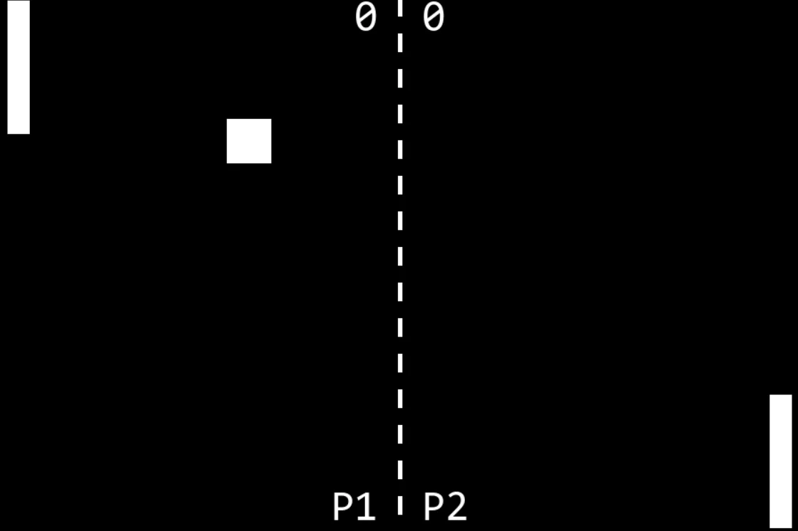
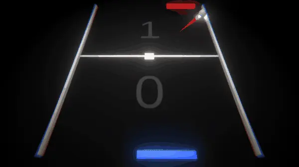
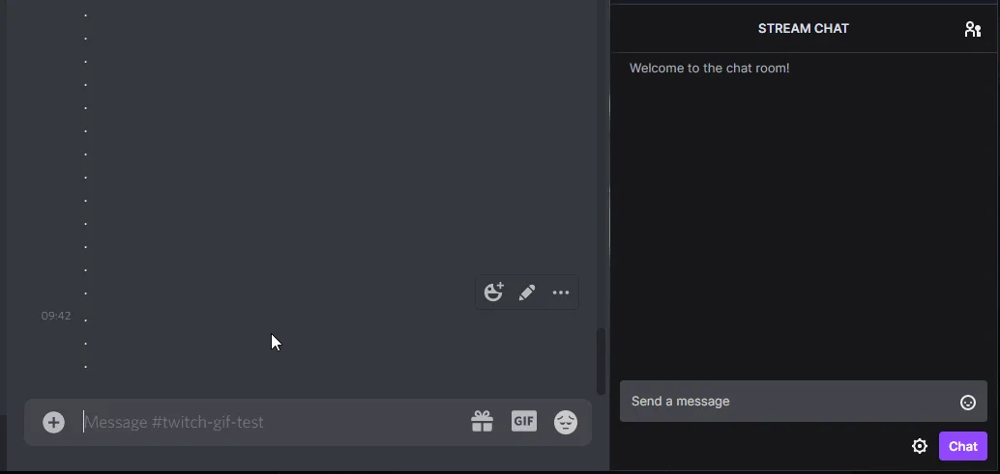

About
Étudiant en 2ème année de Bachelor Développeur Web à l'ESD Paris, auto-entrepreneur, j'ai toujours été passionné par l'informatique. Le développement web et les jeux vidéo forment à eux deux mon fer de lance en informatique: la créativité et le challenge technique.
Études
École Supérieure du Digital - ESD Paris
Bachelor Développeur Web
Sept. 2022 - En cours
Concevoir des applications web, maîtriser les langages HTML5, CSS3, JavaScript et des frameworks tels que React,
utiliser des API, intégrer des interfaces utilisateurs, mener à bien des projets de développement web.
Université Gustave Eiffel
DUT Informatique
Sept. 2020 - Sept. 2022
Les enseignements sont : fondamentaux, pour acquérir des connaissances, des concepts de base et des méthodes de
travail, appliqués, pour faciliter l'apprentissage de ces concepts et déployer des savoir-faire professionnels,
évolutifs, pour intégrer les progrès technologiques et les exigences du monde professionnel, ouverts, pour développer
les facultés de communication indispensables aux informaticiens dans l'exercice de leur métier.
Lycée Polyvalent René Cassin
Baccalauréat STI2D - Mention Bien
Sept. 2017 - Juil. 2020
Formation à l'industrie et à l'innovation technologique en matière de préservation de l'environnement.
Expérience
WATT Earth
Apprenti développeur R&D
Oct. 2021 - Sept. 2022
J’ai travaillé sur la conception et le développement de fonctionnalités innovantes au cœur des produits WATT Earth
(en utilisant du Typescript, Javascript, Python, VueJS, Go, PhP, MySql, Warp10, pour ne citer qu’eux), mais aussi
sur du maquettage et de la conception d'interfaces utilisateurs (Figma), de la réalisation de spécifications et de
cahiers de recettes et enfin de l’intégration de technologies dans la olution de l'entreprise, correspondant aux
besoin client (Modbus, LoRaWAN, Zigbee...).
UGAP
Support technique et informatique
2016, une semaine
Mes objectifs étaient de déterminer des solutions et recommandations techniques et de les communiquer aux utilisateurs,
d'analyser les problèmes techniques, d'informer les utilisateurs des problèmes techniques trouvés et des modifications
et réparations à effectuer, de former les utilisateurs à un produit ou un équipement et d'effectuer le suivi technique
des produits et de leur évolution auprès des utilisateurs.

Pong2D
Mon tout premier projet en Python (avec Pygame). Il s'agit d'un simple Pong, avec un menu principal, un menu pause et un game over.
Aller vers le dépôt GitHub
Fermer

Pong3D
Mon tout premier projet sur Unity. Il s'agit d'un simple Pong en 3D, avec quelques effets et un atmosphère plutôt calme.
Aller vers le dépôt GitHub
Jouer
Fermer

Risitas Bot
Risitas_Bot est un robot Discord qui peut connecter votre chat Twitch à un canal Discord en temps réel. Faites rire vos
amis en jouant le meme "Issou !" sur commande dans un canal vocal et obtenez quelques statistiques sur votre
compte Osu, ainsi que sur vos dernière parties classées !
Aller vers le dépôt GitHub
Fermer

Riverwood
Travail des étudiants du DUT Info 1 (IUT de Marne-la-Vallée). Les étudiants devaient réaliser une production sonore
inspirée du court-métrage "Calls" de Timothée Hochet.
Regarder sur YouTube
Fermer

thèses.fr
Le but était de récupérer le jeu de données fourni par thèses.fr, de le normaliser, et de créer un site permettant de
consulter ces données, dans un premier temps sous forme de liste simple mais visuellement agréable, puis dans un second
temps de résumer les recherches sous forme de graphiques.
Visiter le site
Fermer
Hobbies
üöß Travaux en cours üöß